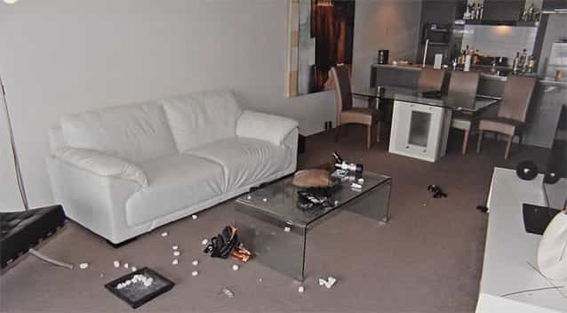

< < < Back
Man Charged With Murder After Girl Who Attacked Him Climbs Off His Balcony And Dies – Return Of Kings
There was no medical evidence the 26-year-old [Warriena Wright] was strangled before her death, but her body bore multiple scars suspected of being self-inflicted.
— Brisbane’s Courier Mail
She [pathologist Dianne Little] said there were no physical signs the New Zealand tourist had been choked, but was instead covered with wounds likely self-inflicted including on her right leg, chest and wrists.
— The Daily Mail
Australian man Gable Tostee is presently on trial for the alleged “murder” of New Zealander Warriena Wright in 2014. Wright, aged 26 at the time, had met Tostee in person that same night after communicating on Tinder. They had drank alcohol, watched a film, and had sex throughout the evening at his Gold Coast, Australia apartment. As the night progressed, however, Warriena Wright attacked Tostee and partially upended his apartment, including to the point of throwing rocks at him. The man then restrained her and put her out on his balcony, locking the door. Wright, without assistance, then climbed over the balcony and fell to her death from the 14th floor (15th floor in American parlance). Murder charges against Tostee soon followed.
We know most of what happened because of a combination of witness accounts and, crucially, Tostee’s surreptitious audio recordings of his time with Warriena Wright. Nevertheless, the bone of contention at the trial is whether Wright “feared” for her life enough to want to try and escape the balcony, leading to her death. Despite the absolute lack of any medical evidence that Warriena Wright was strangled, the prosecution is now sensationally claiming that the audio recordings feature “guttural” sounds of her being choked before being put on the balcony. Go figure.
Importantly, Warriena Wright appears to have been severely mentally ill. The presence of self-inflicted scars around her body is a factor that needs to be emphasized again and again, especially as Tostee’s alleged (now disproven) autism first became a media talking point a long time ago. Wright also threatened to call the police on him (for reasons no one understands) well before he moved her onto the balcony. Add to the mix her inebriation (a BAC of 0.156, over three times the Australian driving limit) and you can see why Tostee struggled to deal with her. That her body showed no signs of him assaulting her (in self-defense) is a testament to his patience.
Tellingly, Wright’s outlandish behavior, self-harm, and intoxication have not been seriously entertained as reasons for her climbing off the balcony and dying. This is an ominous sign for any man accused of a crime involving inexplicable female actions.
Tostee is hated triply because of his womanizing, game, and association with Bodybuilding.com’s Misc section
Man who takes his physical health and sex life seriously – bad. Woman with bull-ring and self-inflicted scars over her body who attacks that man – unquestionable angel.
Make no mistake, Gable Tostee became an even bigger target from the day he was described as a “playboy” by the media. This targeting has gone above and beyond the usual insinuation that any man accused of harming or killing a woman must be guilty. In a society where females are declaring their “emancipation” by slutting around or shouting their STD “status,” men who have options and refuse to settle down are bizarrely described as creeps and sexual predators. In this vein, social media is currently replete with user comments on news stories admonishing Tostee for supposedly objectifying women (isn’t this a trial about the death of one woman?), purportedly “preying” on girls, and being an all-round “douche” and “asshole.”
Amplifying this disdain for Tostee is his involvement in organized “misogyny,” namely through his posting on Bodybuilding.com’s Misc section. The principal thing that prevents the Misc section from being as hated as Return Of Kings and the Roosh V Forum is the more superficially vulgar banter and less overtly politicized discussions that take place there. Aside from the Elliot Rodger Isla Vista killings, it largely escapes all SJW radars. In a brilliant demonstration of subtlety, huge numbers of the posters are highly intelligent, astute guys who just happen to use vocabulary you would typically link to a building site. Regardless, once it became obvious that Tostee posted there, he was vilified.
Recording the incident has saved Tostee from a certain murder conviction
Enough men in recent times have been saved from certain criminal convictions for rape, domestic violence, and even murder because they recorded visual and/or auditory evidence of their encounters with women. What judgment the court will make about Tostee in these circumstances remains to be seen, but having audio of his interaction with Warriena Wright has bolstered his defence substantially. Without such corroboration of many elements of his story, this would be an open-and-shut case. Not open-and-shut in the sense of a fair trial and conviction, but another example of a man immediately presumed guilty and given the lip service of “due process.”
There is no question that Warriena Wright comes across as an unhinged, mentally disturbed dingbat in the audio recordings, and a drunk one at that. Imagine the even greater bias the media and other corners would indulge in if these recordings did not exist. That prospect should send chills down your spine as they are already rounding on Gable Tostee badly. After reviewing the relevant laws in your jurisdiction, you might seriously consider using visual or auditory recording to protect yourself from false allegations or charges where legally possible.
Understanding Gable Tostee
Bull-ring, hair dyed with an unnatural color…
There is no doubt that Gable Tostee has some unusual characteristics and his behavior on the night could have better, as well as his documentation of it online thereafter. His recorded reference to her being lucky that he did not throw her off the balcony is a good example. As for him eating pizza in the Gold Coast nightclub precinct after Wright fell and died, what is a man to do in this situation? Men are immediately judged and assumed to be guilty, a parade that endures throughout the legal process and often greatly influences/determines it. Whilst it would have been better if Tostee had not gone for pizza, the shock and disorientation he undoubtedly felt after Warriena Wright climbed off the balcony and fell to her death is understandable.
The same goes for Tostee not evicting her from his apartment. He claims the balcony was closer than the front door and that he wanted her to stop attacking him as soon as possible, without a prolonged physical altercation. Wright can be heard screaming “no, no, no” and that she wanted to leave, yet this was in the context of her just having assaulted Tostee and acting like a drugged-up pork chop. It is very easy to judge from afar. For the man in the middle of things, though, it is decidedly less clear-cut. If he “assaults” her back, even to the extent of self-defense, he faces criminal charges. If he does nothing, he gets things thrown at him and attacked further, and his property is at the risk of more damage. Warriena Wright’s massive volatility that night would have been a big concern of Tostee’s. You can let people like this free and they go crazy again (remember Indian-American fruitcake Anjali Ramkissoon?).
Tostee has been diagnosed with social anxiety, after claims of autism were dismissed. From conversations I have had with people, he had apparently undergone some impressive changes since leaving school, where he showed limited signs of the “playboy” inclination. He has taken his self-development physically and game-wise seriously, even if some on the Misc section were quite baffled by some of his posts at times. The problem he faces is that the media is portraying him as both the manipulative womanizer and the creepy outsider at the same time, particularly as he has previously been depicted as a semi-loner. It’s bad from both ends and outlets have sought to capitalize on the hatred against him, which frequently incorporates threats of violence.
What’s next if Tostee is convicted of murder or manslaughter?

“Why couldn’t this man just patiently wait while the crazy girl attacked him and tried to trash his place? Misogyny!”
A jury can alternatively convict Tostee of murder or manslaughter. Either outcome would be deleterious. Just as “domestic violence” has been progressively expanded through extra legislation, the scope for homicide is being widened through very tenuous judicial decisions. I am not entirely familiar with Queensland’s homicide laws and court precedents, but the general test in non-direct murder cases is that a person needs to have a reasonably founded fear for taking the action that causes their death (think someone running into traffic and being killed because a person is pursuing them with a knife).
Men have a very raw deal when it comes to a woman who acts violently. They are severely and unfairly scrutinized whatever option they take to deal with it. Once more we face the prospect of a man being convicted for a “crime,” involving a situation that could have been avoided completely if the woman in question had not gone crazy.
The world sucks, heh?
Read More: White Knights Demand Custody Of Child For Woman Who Plotted To Murder Eight Ex-Boyfriends